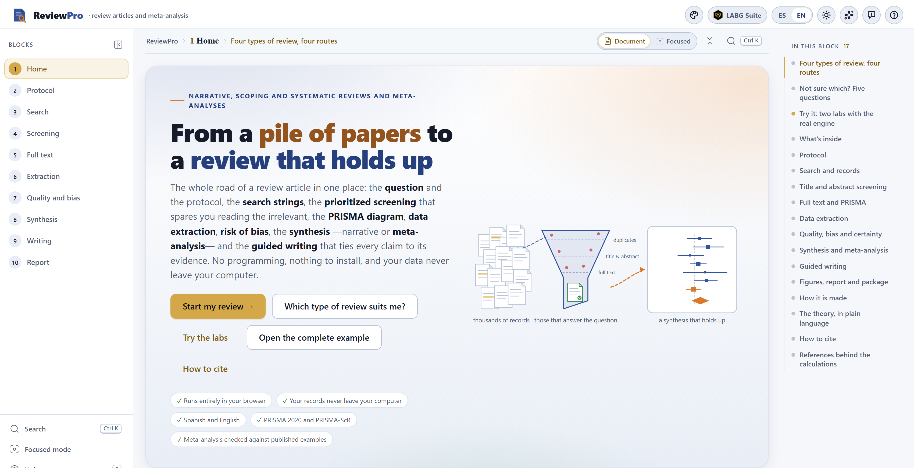
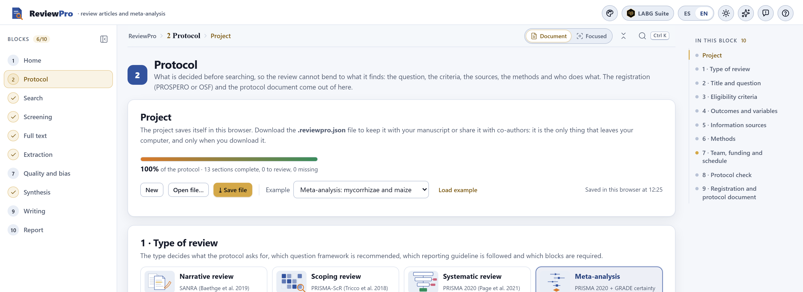

The digital object identifier (DOI) will be added to both citations when version 1.0 is archived. Meanwhile, the citation of the program appears in the How to cite section of the app’s home page.
ReviewPro runs entirely inside your browser. The bibliographic records you import, your screening decisions, the data you extract and the text you write are kept on your computer and are never sent to any server. The only things that leave the program are what you download: the project file, the tables, the figures, the manuscript and the package. Nor does the program need the internet: once copied, it works with the machine offline.
The illustrations, diagrams and screenshots in this manual are original: they were generated with the program itself or with code written for the manual. The example project used throughout—a meta-analysis of the effect of inoculation with arbuscular mycorrhizal fungi on maize grain yield—is fictitious: the records, studies, journals, data and reviewers were generated to teach how to use the program and do not describe real research. The only named person in it, Josiah Carberry, is the public test identity of the ORCID documentation; the DOIs in the example use the prefix 10.5555, reserved for testing.
The manual follows the same order as the app: ten numbered blocks, listed from top to bottom in the block list on the left of the screen. Each chapter explains one block and carries its number—Chapter 5 is Block 5, and its sections, figures and tables are numbered 5.1, 5.2…. Each one begins with the methodological idea the block needs, continues with what the screen does and how to read it, and ends with the messages the block can show and what to do about them. This introduction has no number: its sections run I.1, I.2….
The block’s color appears in the opening of its chapter, in the number of each section, in the tab on the edge of the page and in the contents, and it is the same as in the band on the cover. That way you can tell at a glance which part of the app you are in.
| Block | Name in the app | What it does |
|---|---|---|
| 1 | Home | Home page, the four types of review with their route, a five-question assistant, two labs that really compute, the theory in plain language and the references |
| 2 | Protocol | The project, the question with its framework (PICO, PECO, PCC, SPIDER), the criteria, the outcomes, the sources, the methods, the team and the schedule; the check against PRISMA-P and registration in PROSPERO or OSF |
| 3 | Search | The string by concept blocks, written in five syntaxes; the log of each source; import from six formats; duplicates; the test with known articles |
| 4 | Screening | Title and abstract with keyboard shortcuts, prioritization by active learning, stopping rules, blind double screening, kappa and reconciliation |
| 5 | Full text | Where each PDF is, what was found by other routes, eligibility with its reason for exclusion and the PRISMA 2020 flow diagram built from the real counts |
| 6 | Extraction | The form you design, extraction by reviewer, the effect-size calculator, the comparison of double extraction and the final tables |
| 7 | Quality and bias | Risk of bias by domains with the agronomic checklist (or other tools), reconciliation, traffic-light plots, GRADE certainty and the summary of findings |
| 8 | Synthesis | The multilevel meta-analysis (or the average per study), heterogeneity, moderators, sensitivity and publication bias; and synthesis without meta-analysis |
| 9 | Writing | The manuscript by sections, with live citations and data, the claim checker, the PRISMA or SANRA checklist and export to Word, HTML and Markdown |
| 10 | Report | The project status, the numbered figures, the self-contained report and the .zip package that reproduces the whole review |
Clarifications and practical tips that save time.
What can change your conclusions if overlooked.
The idea behind a step or a computation, without unnecessary formulas.
A case worked step by step with the program’s example project.
| If the result falls in this case… | then this is the recommended reading. |
They are guides for deciding and interpreting, not laws: what you know about the topic, the studies and your question always comes first.
| Written like this | Means |
|---|---|
| Start my review → | A button, checkbox or menu of the app, with its text exactly as it appears on screen in English. |
| Block 8›Publication bias | A path: open the first and look for the second inside it. |
[@Cruz2021], {{n.included}}, .reviewpro.json | Something typed exactly as shown: a citation, a live datum, a file or field name. |
| lnRR · 95% CI · PI · I² · τ² | The log response ratio, the 95% confidence interval, the prediction interval, the relative heterogeneity and the between-study variance. |
| +16.9% · 0.156 · 1,480 | Effects in lnRR are read as a percentage change; decimals use a point and thousands a comma, as in the app. |
| record · report · study | A record is a bibliographic entry; a report, a document (article, thesis, conference abstract); a study, a piece of research, which may have several reports. PRISMA 2020 distinguishes them and so does the app. |
All the results in the text were obtained by opening the complete example project in the app—the Open the complete example button on the home page—and were copied from the screen. If you open it yourself, you should see the same numbers: the example is a fixed file and every computation is deterministic. Where a chapter uses something else—the example protocol of a scoping review, the labs of Block 1—it says so before giving the number.
What the program is, which types of review it covers, what it takes in and what it delivers, and how it is followed from beginning to end. It includes the five ideas that hold everything else up—decide before searching, everything is recorded, the model ranks but does not decide, the average is not enough, and the app guides but does not write—and an honest list of what the program does not do.
ReviewPro is a platform for doing a review article from the question to the manuscript: it fixes the question and the protocol before searching, writes the search strings in the syntax of each database, gathers and cleans the records, orders screening so that the relevant ones come first, keeps count of every exclusion up to the PRISMA diagram, extracts the data and computes the effect sizes, assesses risk of bias and certainty, combines the studies—with or without meta-analysis—and accompanies the writing up to a Word document with its citations and references.
Everything happens inside the browser. There is nothing to install, no programming is needed and the data never leave the computer. It is written for researchers, teachers and graduate students in the agricultural and biological sciences, but it works for any field: it knows that most agronomic reviews combine field experiments with several sites or seasons per study, that means come with the LSD or the standard error instead of the standard deviation, that the risk of bias of a field trial is not assessed with the same checklist as a clinical trial, and that what readers need to know is not only whether a treatment works on average, but what would happen at a new site.

Not every review asks for the same things. The app distinguishes four, and the type you choose in the protocol decides which question framework is recommended, which reporting guideline is followed, which blocks are required and what the manuscript skeleton looks like (Grant and Booth 2009).
| Type | When it suits | Reporting guideline | Blocks required | Typical time |
|---|---|---|---|---|
| Narrative | State of the art, conceptual framework of a project, an emerging or very broad topic, a debate between schools. | SANRA (Baethge et al. 2019) | 2, 3, 6, 8, 9, 10 optional 4, 5, 7 | 1 to 3 months |
| Scoping | Mapping a field before a systematic review, identifying concepts and methods, detecting research gaps. | PRISMA-ScR (Tricco et al. 2018) | 2 to 6, 8, 9, 10 optional 7 | 3 to 9 months |
| Systematic | A focused question (PICO or PECO) that asks for a defensible, auditable answer. | PRISMA 2020 (Page et al. 2021) | 2 to 10 | 6 to 18 months |
| Meta-analysis | A systematic review whose studies report comparable effects (means, SDs and n; counts; correlations). | PRISMA 2020 + GRADE certainty | 2 to 10 | 6 to 18 months |
It is not the number of articles nor the tone. A review is systematic when another person, with your protocol, would arrive at the same studies: the question and the criteria are fixed before searching, the search is documented to the character, every exclusion has a recorded reason and the quality of each study is assessed with a declared tool. A scoping review shares that rigor in the search, but its product is a map, not an answer. Meta-analysis is a statistical technique applied within a systematic review when the effects are comparable; without the systematic review underneath, it only averages a biased sample with precision.
| 1 · Decide before searching | The question, the criteria, the outcomes, the moderators and the synthesis plan are written in the protocol (Block 2) before seeing a single result. This is what keeps the review from bending to what it finds, and it is the first thing a skeptical reviewer looks for. |
| 2 · Everything is recorded | Every string with its date, every merged duplicate, every decision of every reviewer with its reason, every extracted value and where it came from, every bias judgment. From there come the numbers in the PRISMA diagram and the package that reproduces the review. |
| 3 · The model ranks, it does not decide | Prioritized screening learns from your decisions and brings to the top what resembles what you included, but it excludes nothing. Stopping before reading everything is your decision, with a declared rule and a check. |
| 4 · The average is not enough | A positive, significant mean effect can coexist with sites where the treatment loses. That is why the app always reports the heterogeneity and the prediction interval, and the GRADE certainty for each outcome. |
| 5 · The app guides, it does not write | It says what each section needs, offers the citations and the numbers from the analysis and flags unsupported claims, but the interpretive text is yours. Nothing in ReviewPro generates prose for you. |
.reviewpro.json project saved earlier, yours or a co-author’s..zip package.A modern browser—any Chromium-based browser or Firefox, from 2023 onward—and the program folder. There are two ways to open it:
Double-click index.html | The normal way. The app opens from the disk and works in full, offline. |
Double-click Open ReviewPro.bat | On Windows, it starts a small local server and opens http://localhost:9550. It is only needed if your browser blocks something when opening local files, or to run the program’s test page. |
The project saves itself to the browser’s storage every time you change something; the bar of Block 2›Project says when that last happened. But that storage lives in that browser on that computer: if you clear your browsing data, switch browsers or open the app on another machine, it will not be there.
Download the project with ⤓ Save file at the end of each working session and keep it next to your manuscript. It is a single .reviewpro.json file with everything: the protocol, the search, every decision, the extraction, the appraisal, the synthesis and the text. With it you pick up the work on another computer, share it with a co-author or attach it as supplementary material.

| Element | What it does |
|---|---|
| Logo | Returns to the home page (Block 1). |
| Palette (first round button) | Opens the figure studio: palette, font, line widths and background of every chart in the app at once, on screen and in what is exported. |
| ES · EN | The language of the whole interface. The text you write is not translated; exports (report, manuscript) come out in the active language. |
| Sun / moon | Light or dark theme. Exported figures use the theme you choose in their menu, not the one on screen. |
| Block list | The ten blocks, in the column on the left. All are always available: you can go back to correct something, and the following blocks are recomputed when you open them. |
| ⤓ button of each figure | Appears when you hover over the corner of a chart: it exports that figure as PNG, JPG or SVG, with its title and its note. |
If you open the file with the address ending in #b5 (or any other number), the app goes straight to that block; that way you can save a bookmark to carry on where you left off.
The Open the complete example button on the home page loads a review already carried out from start to finish, the same one in every figure of this manual. If you have a project open, the app asks before replacing it: save it first if you want to keep it.
Question: in field-grown maize, what effect does inoculation with arbuscular mycorrhizal fungi have on grain yield, compared with the same management without inoculation? It is a meta-analysis with the PICOS framework. Search: the six test files of Block 3—three databases, a thesis repository, an institutional repository and a hand search—44 records identified and 13 duplicates. Screening: two reviewers with independent, reconciled decisions. Included: 20 studies in 21 reports, with 41 comparisons (sites or seasons) of yield. Result: yield increased by +16.9% (95% CI +9.7% to +24.6%), with I² = 79% and a prediction interval from −12.7% to +56.5%; the certainty of the evidence is very low. Three studies still have unreconciled bias judgments and the manuscript is a draft: this way the example also shows what pending work looks like.
Block 2 also has example protocols for each type of review (the Example menu and the Load example button), which fill only the protocol; Block 3 loads the six test files with Load the test files; and the labs of Block 1 generate fictitious literatures from a seed. Everything is invented and the app says so every time.
The order is not a prison: a real review goes back and forth. If while extracting you discover that a criterion was ambiguous, you document it as an amendment in the protocol and carry on; if you add a study from a hand search, it enters through Block 5 and the diagram counts it separately.
| It does not search the databases for you | It writes the string in the syntax of each database, but the search is run on each database’s site, with your access, and the results are imported. That way the search is documented exactly as it was done. |
| It does not read the PDFs | It keeps where each one is on your computer and opens it, but the data are extracted by reading, not guessed from the file. |
| It does not decide what is included | It orders screening and suggests GRADE judgments from the data; the decision and its justification always belong to the reviewers. |
| It does not write | Neither the introduction nor the discussion. It gives the skeleton, the citations, the numbers and the review of claims. |
| It does not do every meta-analysis | It covers two- and three-level random-effects models with moderators. It does not do network, diagnostic-accuracy, Bayesian or individual-participant-data meta-analysis; if your question calls for them, export the effects table and continue with specialized statistical software. |
| It does not replace expert judgment | A high I², an asymmetric funnel or low certainty are signals to think about, not verdicts. The manual gives decision rules; what you know about your topic comes first. |